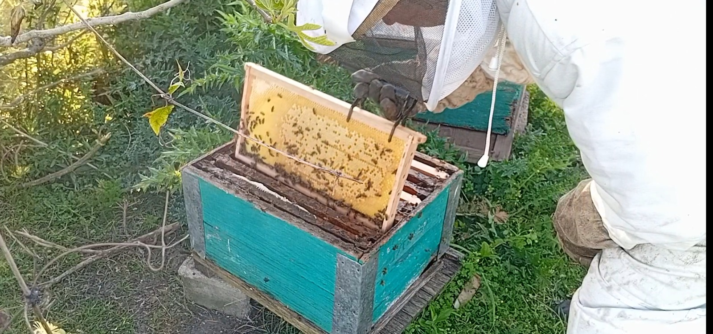
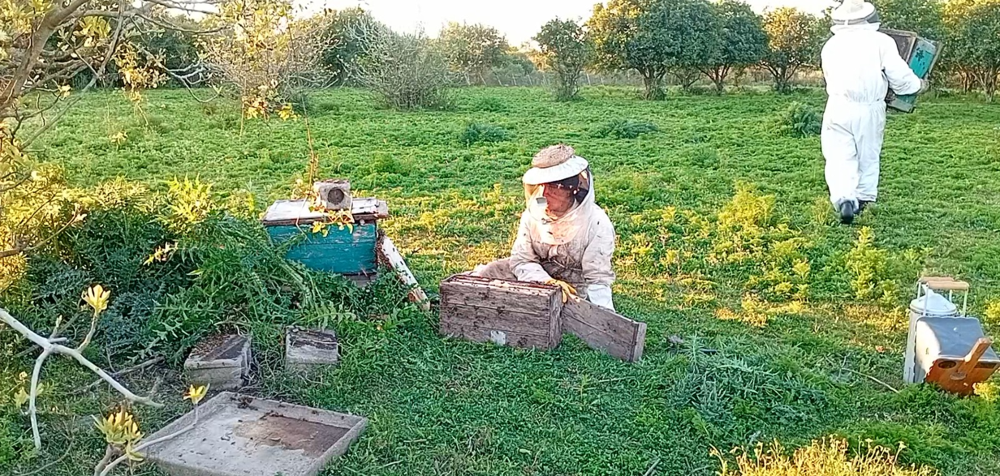
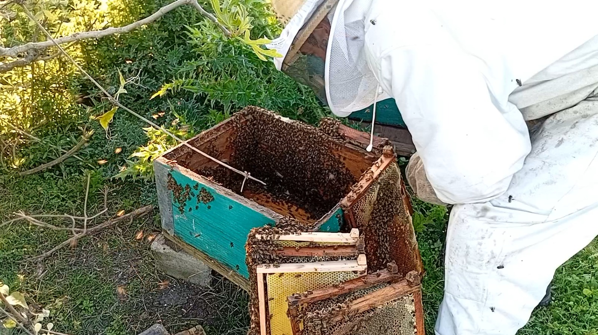
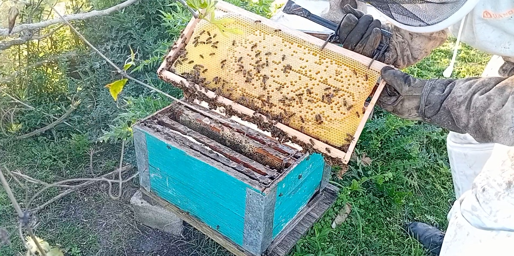
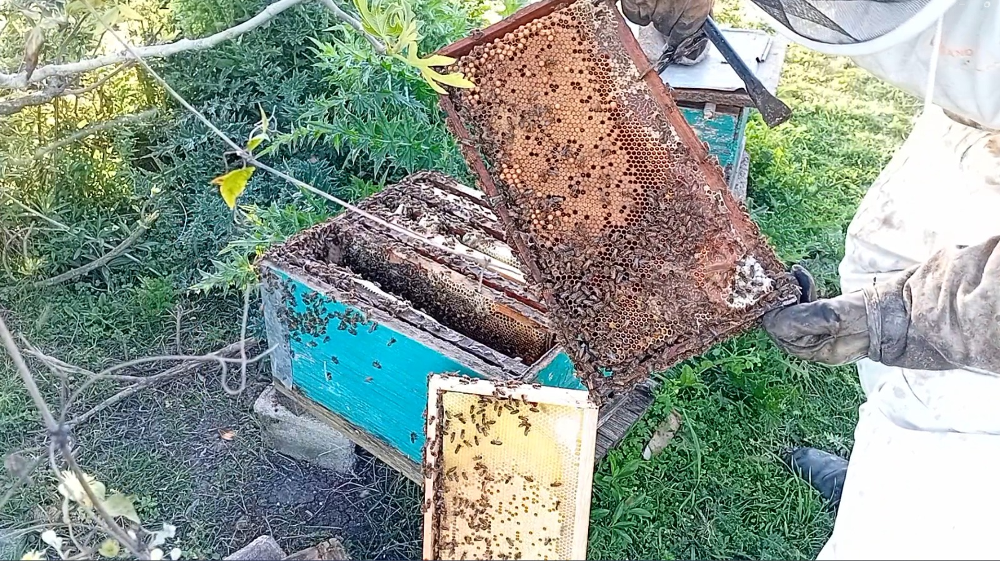
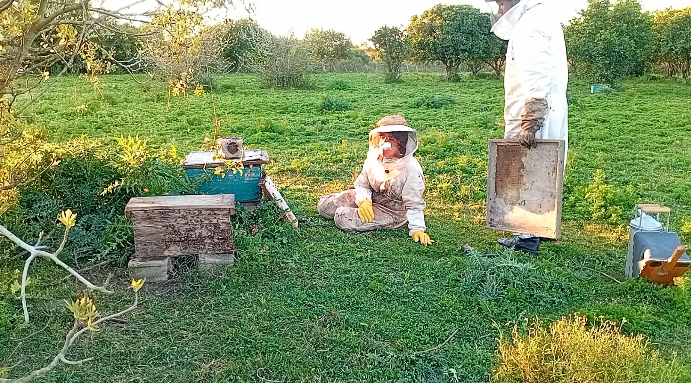
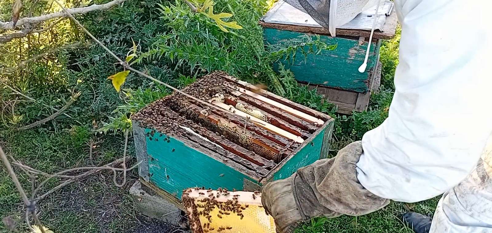

BASE DE DATOS APÍCOLA
Una iniciativa para difundir conocimientos
Descripción
🌼 El polen y su papel en la vida de las abejas
El polen es el polvo fino que producen las flores y que contiene las células reproductoras masculinas de las plantas. Para las abejas, el polen no solo es un recurso esencial, sino también un elemento clave para la supervivencia de la colmena.
📍 Recolección y transporte
Las abejas obreras visitan las flores en busca de néctar y, al mismo tiempo, recogen polen. Este se adhiere a los pelos de su cuerpo y es compactado en pequeñas bolitas que colocan en las corbículas (estructuras en sus patas traseras). De esta manera, lo transportan hasta la colmena.
🏠 Integración en la colmena
Una vez dentro, las abejas depositan el polen en los panales. Allí es mezclado con néctar y enzimas, formando lo que se conoce como “pan de abeja”. Este proceso evita que el polen se deteriore rápidamente y lo convierte en un alimento más nutritivo y fácil de conservar.
📦 Almacenamiento
El polen se guarda en las celdillas de los panales, sellado con una fina capa de miel y cera. Este método de conservación permite que el polen se mantenga en buen estado durante semanas o incluso meses, dependiendo de las condiciones de la colmena.
⏳ Duración útil
El polen fresco puede perder sus propiedades en pocos días si no se procesa. Sin embargo, transformado en “pan de abeja”, su vida útil se extiende considerablemente, asegurando reservas para épocas en que las flores escasean.
🍽️ Utilización dentro de la colmena
El polen es la principal fuente de proteínas para las abejas.
Las larvas lo necesitan para crecer y desarrollarse.
Las abejas jóvenes lo consumen para producir jalea real.
Toda la colonia depende de él para mantener su fuerza y capacidad de trabajo.







Objetivos
- Promover el conocimiento apicola
- Generar soluciones sostenibles
- Difundir conocimiento técnico